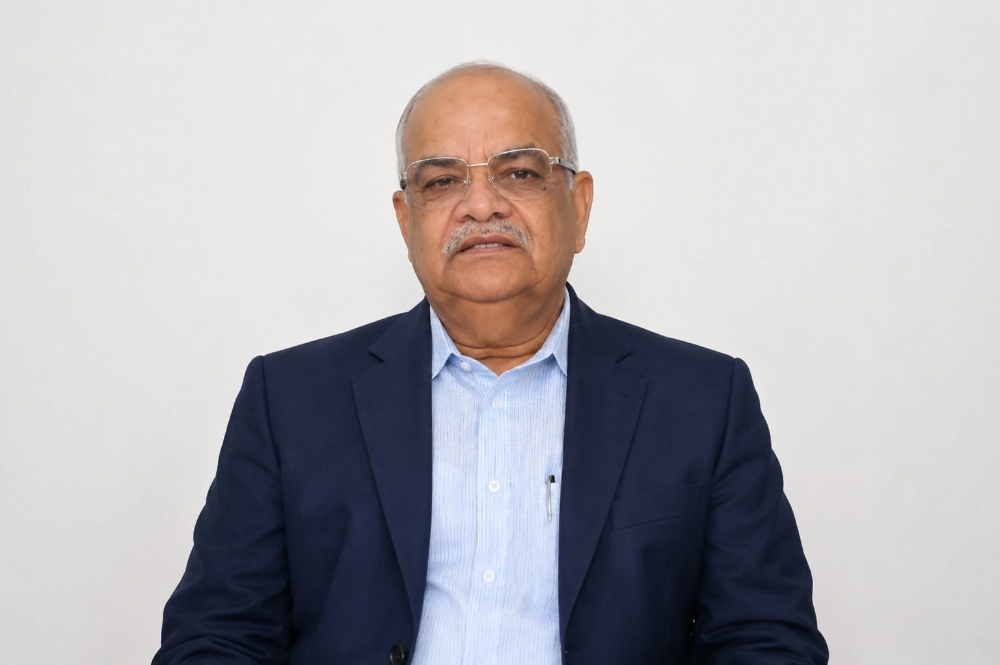

Institution, Vision & Team — all in one place

Founded in Remembrance,
Built for Service
Thakur Ram Singh Smriti Nyas, Himachal Pradesh is a public charitable institution established with a vision to serve society through meaningful, sustainable, and value-driven initiatives — founded in the revered memory of Shraddheya Thakur Ram Singh Ji.
His life exemplified selfless service, integrity, discipline, and an unwavering commitment to the welfare of society. His ideals form the moral and philosophical foundation upon which the Trust carries forward its work.
"सर्वे भवन्तु सुखिनः, सर्वे सन्तु निरामयाः।"
Rooted in the ethos of Bharatiya Sanskriti, the Trust operates on the principle that true development is the holistic upliftment of individuals and communities — socially, culturally, and spiritually.
Guiding Principles
Office Bearers & Team
